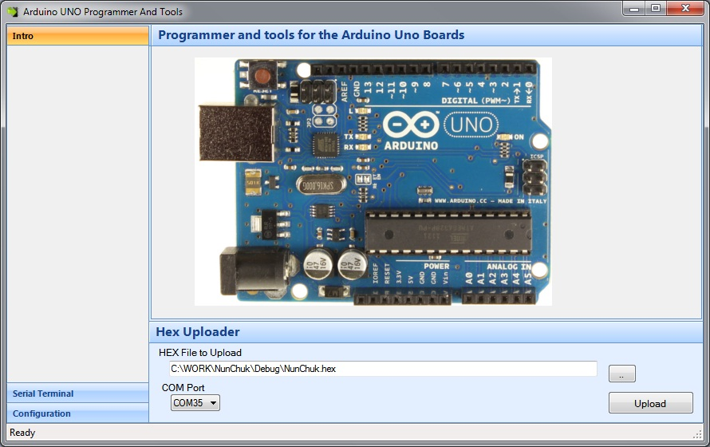
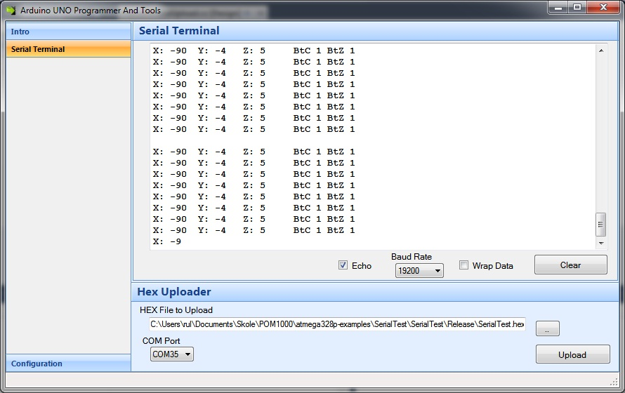

Download latest version width binary installer Ver1.10
FEATURES:
RS232 Serial Terminal:
Configuration panel:
The program uses AVRDUDE (AVR Downloader/UploaDEr)
to program the atmega328p
The AVRDUDE parameters could be changed so that this program could be used to program other microcontrollers.
Unzip and Run setup.exe :)
LICENSE: (The MIT License) Permission is hereby granted, free of charge, to any person obtaining a copy of this software and associated documentation files (the ‘Software’), to deal in the Software without restriction, including without limitation the rights to use, copy, modify, merge, publish, distribute, sublicense, and/or sell copies of the Software, and to permit persons to whom the Software is furnished to do so, subject to the following conditions: The above copyright notice and this permission notice shall be included in all copies or substantial portions of the Software. THE SOFTWARE IS PROVIDED ‘AS IS’, WITHOUT WARRANTY OF ANY KIND, EXPRESS OR IMPLIED, INCLUDING BUT NOT LIMITED TO THE WARRANTIES OF MERCHANTABILITY, FITNESS FOR A PARTICULAR PURPOSE AND NONINFRINGEMENT. IN NO EVENT SHALL THE AUTHORS OR COPYRIGHT HOLDERS BE LIABLE FOR ANY CLAIM, DAMAGES OR OTHER LIABILITY, WHETHER IN AN ACTION OF CONTRACT, TORT OR OTHERWISE, ARISING FROM, OUT OF OR IN CONNECTION WITH THE SOFTWARE OR THE USE OR OTHER DEALINGS IN THE SOFTWARE.
Rune Langøy
Download latest version width binary installer Ver1.10
Older Versions: Ver1.01
You can also clone the project with Git by running:
$ git clone git://github.com/rlangoy/Arduino-Uno-Uploader-Tool